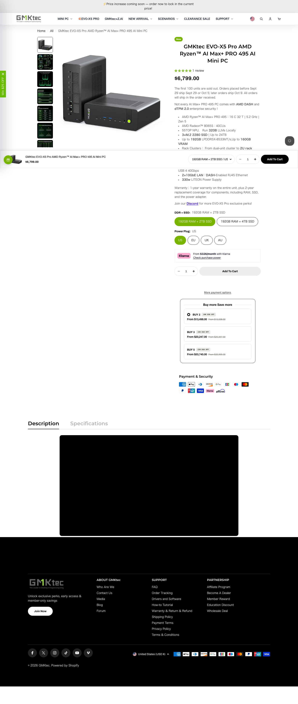
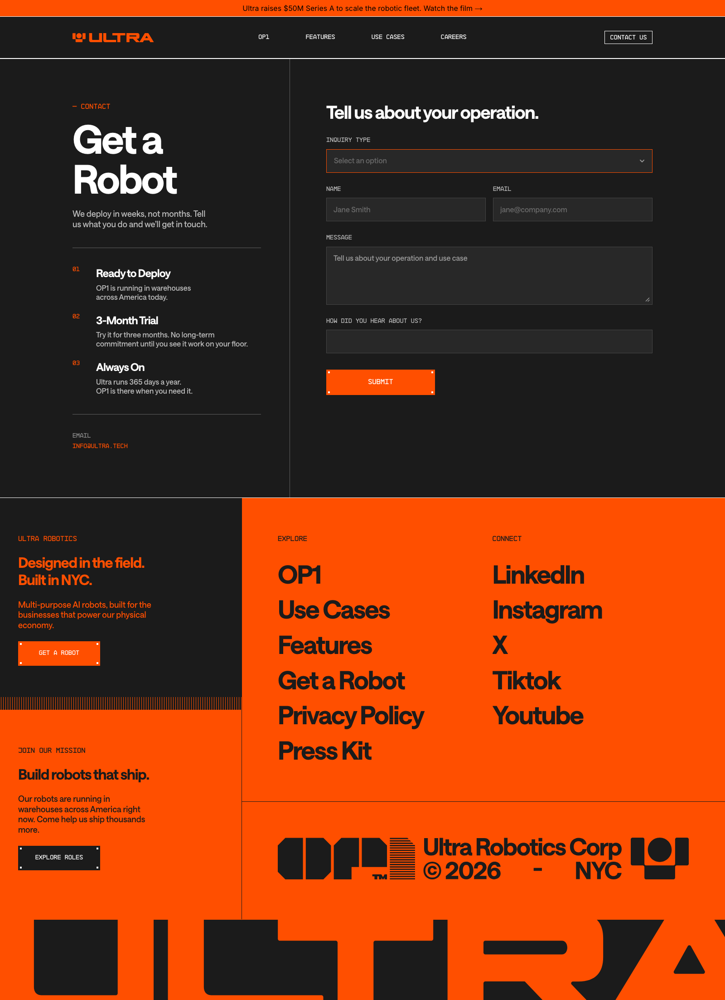
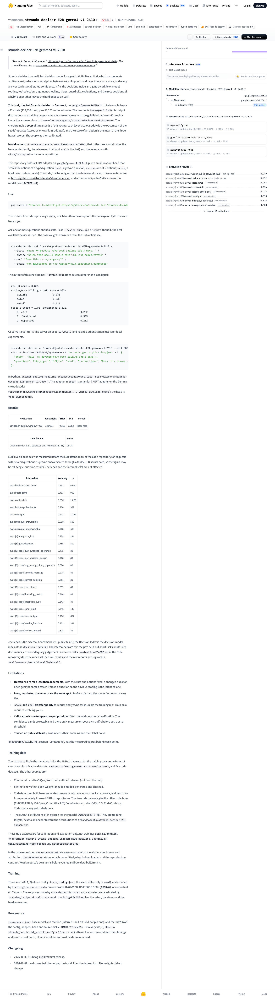
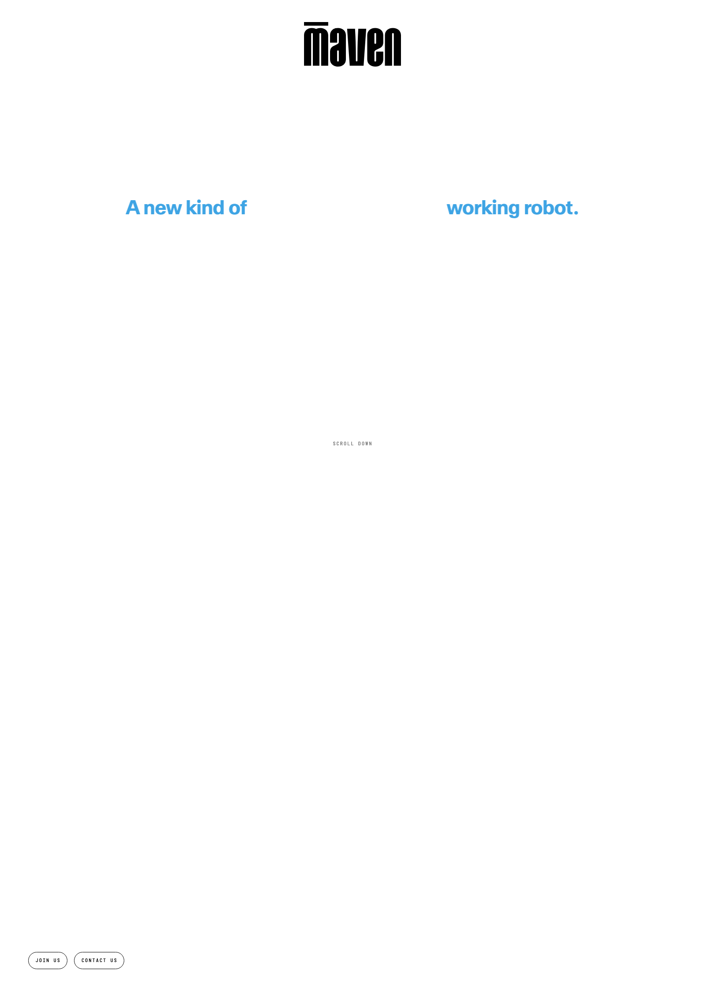
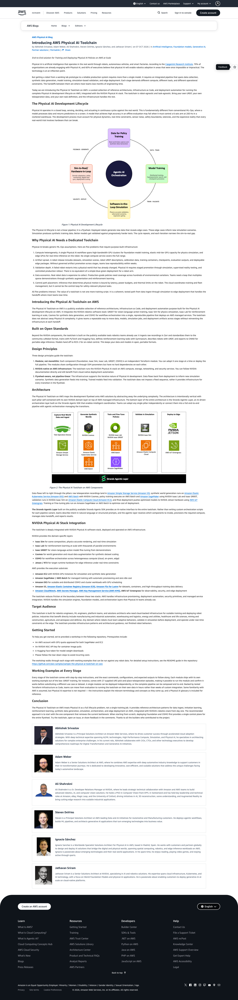

officialcovered
官方线今天由 GMKtec、Cloudflare、Amazon Strands 和 AWS 的可核查更新组成：有产品页、开发者入口和明确日期。没有把公司愿景、性能宣传或模型可下载自动升级为真实用户成功率；每项仍保留规格与体验的证据边界。
gmktec.com · developers.cloudflare.com · huggingface.co · aws.amazon.com
2026-10-11 · America/Toronto
今天的产品线索集中在一个具体转向：Agent 不只生成答案，而是在本地设备、仓库工位、机器人控制链和音视频输入之间做可执行判断。能否看见状态、阈值、权限、失败与人工接管，比再加一个聊天入口更决定产品是否可用。
gmktec-evo-x5-proconfirmed product

GMKtec EVO-X5 Pro 是一台面向本地 AI 的高规格 mini PC。10 月 9 日官方更新把它从 IFA 展示和发烧友硬件进一步定义为可进入商业环境的本地计算节点：它可以离线运行大模型，支持远程管理、硬件安全、企业指纹认证和多节点扩展。这里确认的是产品定位与已披露规格，不把‘可运行 320B’自动写成每种任务都能顺畅运行。
产品类型是 local-AI workstation / agentic mini PC。它不是一个面向普通消费者的聊天应用，而是把 CPU、GPU、NPU、统一内存、存储和网络接口集中在一个桌面或机架节点里，让团队把模型、知识库、视觉处理和工具调用留在局域网。对 HCI 的影响在于：用户面对的入口可能是内部工作台或 Agent，而不是云端聊天框；管理者还必须看见模型路由、设备状态和权限边界。
典型流程是工程师在本地安装推理运行时或企业 Agent，选择模型和工具，把内部文档、代码或图像送入节点，先在设备侧完成检索与推理，再把结果写回工作台。官方没有提供完整的消费者交互界面，因此不能声称它自带统一 Agent shell。真正的产品体验取决于初始化、模型下载、显存分配、失败回退、远程管理和多人并发是否被做成清晰的状态面板。
官方产品页列出 AMD Ryzen AI Max+ PRO 495、16 核 32 线程、最高 5.2GHz、Radeon 8065S、55 TOPS NPU、最高 192GB LPDDR5X-8533 统一内存、最高 160GB 可分配 VRAM、最高 24TB 的三条 M.2、dTPM 2.0、指纹认证、AMD DASH、双 10GbE 和 USB4 接口。官方文章称支持离线 320B LLM；软件版本、量化方式、上下文长度、真实吞吐、噪声和功耗 source not stated。
具体场景包括在企业内网运行代码助手、对敏感合同和设计资料做本地问答、用视觉模型处理工厂图像、为离线现场设备提供故障诊断、在没有稳定公网的工作坊里测试 Agent，以及把两台设备组成更大的推理节点。它也适合模型开发者比较量化、上下文和工具调用。社区讨论更关注价格、是否值得替代多台较便宜设备，以及 Radeon 软件栈是否足以支撑目标模型。
它直接回应云端推理的隐私、延迟、成本和网络依赖。把 192GB 统一内存和较大显存空间放进桌面设备，减少为了运行更大模型而立刻购买服务器的门槛；dTPM、DASH 和指纹认证则把‘本地’从单纯断网能力推向可管理资产。它没有自动解决模型更新、权限管理、并发争抢和工作流设计，设备能运行模型也不等于团队能安全使用。
来源与证据说明 · confirmed product · 2026-10-09T09:00:00-04:00 [1] [2] [3] [4]
gmktec-evo-x5-proconfirmed product
独立报道把 EVO-X5 Pro 视为高价的 Gorgon Halo 类本地 AI 设备；Reddit 讨论认可 192GB 统一内存，但也质疑价格、AMD 软件兼容、售后和与 RTX Spark 等方案的取舍。这些是 review/community friction，不是系统化基准测试。当前没有足够长期实测证明它在持续满载、长上下文、多用户并发下的稳定性。
新意来自‘高内存消费级封装 + 企业可管理安全 + 离线大模型 + 多节点扩展’的组合。对产品设计而言，关键不是把 320B 印在宣传页，而是让用户能在模型大小、速度、隐私、成本和功耗之间做选择，并在本地失败时看见原因。若 DASH、dTPM 与推理管理能统一到一个可理解的控制面，这类 mini PC 才可能从个人玩具变成团队基础设施。
GMKtec 官方页面显示美国订单、1 年保修和公开价格；页面当前列出 $6,599 的促销价，并说明首批与后续发货批次。中国商业化文章说明了企业方向。地区税费、具体存储配置、企业支持合同、软件镜像和批量采购 SLA source not stated；购买页面才是价格与库存的当前真值。
未知包括持续功耗和噪声、不同模型的 tokens/s、GPU 内存切分是否影响桌面体验、Linux/Windows 驱动、容器与安全补丁、远程管理 API、多人隔离、模型版权、离线更新、维修周期和真实交付量。‘可运行 320B’需要明确模型、量化、上下文和速度，不能从内存容量直接推导工作体验。
产品判断：EVO-X5 Pro 是本期最清晰的本地 AI 物理载体，把端侧 Agent 从笔记本功能推向一台可以被管理的计算节点。它解决的是数据与算力边界，不负责替用户设计工作流。值得购买或试点的前提，是先用真实模型和真实资料测量热、噪声、权限、恢复与并发；否则高规格数字会掩盖运维成本。 验收时还要把输入范围、模型或固件版本、触发条件、用户确认、执行结果、失败状态、撤销、权限与日志放在同一条任务记录里；只有能复盘一次完整任务，才能知道产品减少了用户工作，还是把复杂度转移给运维人员。
来源与证据说明 · confirmed product · 2026-10-09T09:00:00-04:00 [1] [2] [3] [4]
ultra-robotics-op1startup signal

Ultra Robotics OP1 Operator 是一个把类人上半身、两侧夹具或叉状末端、升降范围和视觉系统组合到仓库工位的工业机器人。公开报道说它面向拆包、分拣、配套、装袋和贴标；Ultra 官方页面称 OP1 已在美国仓库运行。融资新闻只是背景，本条关注的是已经被描述到具体动作的产品。
产品类型是 warehouse mobile manipulator / physical-AI operator。它不是家用人形机器人，也不试图先解决跨楼层自主移动。工人把它推到平整地面、锁住底座、接入墙电和本地网络，然后让它在一个明确的仓库流程里持续处理物料。这个边界把部署问题从‘机器人能不能到处走’改成‘一个工位能不能稳定产出’。
操作员将 OP1 推到货架或包装区，固定轮子并接入电源；系统通过摄像头和传感器识别容器与物件，抓取、分拣到对应料箱，或按订单把零件配成一套，再把物品放进袋子、封口并贴标签。报道没有公开完整的任务编排界面、人工示教、异常确认或安全接管画面，因此不能推断它无需人看守。
报道给出的产品细节包括类似人形躯干的结构、叉车式末端、最高约 10 英尺的垂直取放能力、壁电供电和本地网络传感数据回传。机器人没有发动机或电池，底座由工人移动；模型、相机、关节自由度、负载、速度、网络协议、软件版本和安全认证 source not stated。
OP1 对应的是仓库入库时混合商品的拆分、把不同箱子的组件按订单重新配套、把产品装入信封或袋子、封装并贴运输标签。它也可能适合重复率高、工位固定、物料尺寸相对可控的电商履约流程。公开资料没有证明它适用于易碎件、软袋变形物、强反光物、极端温度或高密度人工混行区域。
它针对仓库里最不性感但持续耗人的中间工序：把混杂来料拆开、按订单重新组合、完成最后包装。取消电池和自主移动可以减少充电、导航和停机问题，让机器长期插电运行；人工推位又保留了仓库现有布局的灵活性。代价是它把移动、换位和一部分安全责任留给人，不能被宣传成完全无人仓。
来源与证据说明 · startup signal · 2026-10-10T18:00:00-04:00 [5] [6] [7]
ultra-robotics-op1startup signal
本期找到的独立证据主要是 Techflier 和机器人行业媒体的产品报道，尚无长期仓库客户的现场评测。报道把 OP1 的简单设计理解为 uptime 取向，也把融资规模写进标题；用户真实关心的吞吐、维护、异常处理和与 WMS 的连接还没有公开社区样本。
新技术不在‘做成人形’本身，而在于把视觉、抓取、移动底座、叉状末端和仓库任务拆成一个可部署的工位系统。对 HCI 来说，关键界面是工作员如何看到当前任务、被要求处理的异常、机器的置信度与下一步，以及怎样快速暂停并安全取回物品。一个可接管的工位可能比一个会走路的机器人更接近商业化。
Ultra 官方页面称 OP1 已在美国仓库运行；10 月 10 日报道确认公司为 OP1 进行融资并描述了仓库功能。公开资料没有给出购买价格、租赁条款、安装时间、地区、客户名单、交付数量或公开开发者 API。可用性应记为企业部署/询价，不应写成消费者可买。
未知包括单小时吞吐、抓取成功率、换箱时间、货品变化适应性、碰撞保护、人与机器同场规则、断网行为、网络回传的数据内容、维护频率、训练数据、WMS/ERP 接口、人工示教和模型更新。融资金额不等于订单量，也不等于产品已规模化交付。
产品判断：OP1 值得关注，是因为它主动放弃全能机器人叙事，把 Agent 锁在一个可以算账的工位里。它的产品价值取决于每小时少多少人工搬运和少多少停机，而不是外形像不像人。下一关是公开真实工位指标、异常接管路径和与仓库系统的集成证据；目前属于强 startup signal，尚非普遍可用的确认产品。 验收时还要把输入范围、模型或固件版本、触发条件、用户确认、执行结果、失败状态、撤销、权限与日志放在同一条任务记录里；只有能复盘一次完整任务，才能知道产品减少了用户工作，还是把复杂度转移给运维人员。
来源与证据说明 · startup signal · 2026-10-10T18:00:00-04:00 [5] [6] [7]
cloudflare-clefdeveloper surface

Cloudflare Clef 是一组 open-weight decision models，Clef-omni 是 10 月 9 日更新的多模态入口。它不把 Agent 的下一步写成长段文字，而是针对开发者给出的 typed questions 和 allowed answers 返回概率或选择，让路由、升级、拦截和工具调用可以直接接在 API 后面。产品确认的是 Workers AI 上的模型与接口更新，不是所有业务判断都会自动可靠。
产品类型是 low-latency decision-model API / agent control surface。它处于传统分类器与通用 LLM 之间：问题和答案空间由开发者定义，模型负责读输入并对选项评分。Clef-omni 把输入扩展到音频和视频，让 Agent 可以先判断‘这段录音是否紧急’或‘视频是否出现指定事件’，再决定是否调用更昂贵的生成模型或真人。
开发者把文本、图像、WAV/MP3 或 MP4/WebM 送入 Workers AI，附上 typed question 和选项，模型返回每个答案的概率或结构化结果，应用据此路由工单、阻止请求、升级人工或调用工具。Cloudflare 文档称它沿用 System One API，并可接 AI Gateway。用户最终看到的应是一个可解释的状态或升级理由；模型内部的概率不应被直接当成用户可见事实。
官方更新说明 Clef-omni 可在 Workers AI 使用，输入含 WAV、MP3、MP4、WebM、文本和图像，接口沿用 System One API；Clef/Clef-flash 使用 Apache 2.0 开放权重，Clef-omni 的权重与具体参数在本次页面未完整列出。更新报告约 800、3,400、16,000 token 输入的中位延迟从 262/616/2,721ms 降到 152/305/1,635ms，这是 Cloudflare 的服务测量，不等于所有地区和负载。
具体用例包括客服语音是否紧急、视频监控是否出现需要升级的人或物、音频转写后的队列路由、社区内容是否命中特定风险、Agent 是否要把任务交给人，以及在多个工具中选择下一步。固定答案空间便于审计和测试，也让设计师可以把‘为什么升级’显示给用户，而不是只展示一段模型解释。
它回应通用 LLM 在路由任务上的成本、延迟、输出解析和不稳定问题。结构化选项不需要从自由文本里猜模型意图，音视频输入又省去先转写、拆轨再调用文本模型的链路。它没有解决标签定义偏差、长视频取样、误判、概率校准、跨语言和责任归属；把错误动作接到一个更快的模型上，反而可能让错误扩散更快。
来源与证据说明 · developer surface · 2026-10-09T09:00:00-04:00 [8] [9] [10] [11]
cloudflare-clefdeveloper surface
本次可核查证据以 Cloudflare 官方 blog、changelog 和开发者文档为主；Reddit/开发者讨论对与 Jev 兼容和本地运行有兴趣，但尚无足够真实业务长期评测。社区把它视为可插拔的决策层，不能等价成已经证明的生产准确率或成本优势。
技术变化是把‘判断’设计成一等 API，并把同一 typed-decision 语义扩展到音频、视频、文本和图像。对 HCI 的价值是把 Agent 的选择点暴露为可观察、可回放、可人工覆写的状态，而不是隐藏在长文本里。真正成熟的界面应显示输入片段、问题、候选答案、置信度、触发的动作和人工接管入口。
Clef 和 Clef-flash 在 Workers AI 上可用，Clef/ Clef-flash 权重在 Hugging Face 以 Apache 2.0 发布；Clef-omni 的官方 changelog 给出模型 ID 与 System One API 使用方式。价格、区域、限额、音视频大小、保留政策、SLA 和 Clef-omni 权重许可需以当前 Workers AI 页面为准，source not stated in the cited changelog。
未知包括长音频和长视频的采样策略、时间定位、音频噪声、视频遮挡、概率校准、模型版本、跨语言、敏感媒体留存、提示注入、误升级、边界条件和与 Jev 的可比测试。速度提升是服务端测量，不能推导出端到端用户延迟；开放权重也不自动意味着普通团队能低成本自托管。
产品判断：Clef-omni 把 Agent 产品真正需要的‘先判断再行动’做成一个可接入的开发者表面。它比再造一个聊天 UI 更接近工作流基础设施，但价值取决于选项设计、校准、审计和人工覆写。适合用在明确边界的路由与升级，不适合未经测试地把概率当成安全裁决或自动执行许可。 验收时还要把输入范围、模型或固件版本、触发条件、用户确认、执行结果、失败状态、撤销、权限与日志放在同一条任务记录里；只有能复盘一次完整任务，才能知道产品减少了用户工作，还是把复杂度转移给运维人员。
来源与证据说明 · developer surface · 2026-10-09T09:00:00-04:00 [8] [9] [10] [11]
amazon-strands-deciderdeveloper surface

Amazon Strands Decider 是 Strands Labs 为 Agent 准备的决策模型系列。10 月 9 日 Hugging Face 页面记录 `strands-decider-E2B-gemma4-v1-2610` 首个 Gemma 4 版本：它不是生成长答案，而是针对 yes/no、choice 或 ordered score 问题给选项打分。页面还列出 LoRA 适配器、readout head、训练数据和评测脚本，使它成为可下载、可本地改造的开发者产品。
产品类型是 open-weight agent decision component。它位于 Agent 的计划与工具调用之间，负责回答‘是否应该继续’、‘从哪些工具中选一个’或‘风险等级是多少’，把不需要自然语言的判断从大模型中拆出来。对用户来说，界面不应展示一堆模型分数，而应把分数转换为明确的下一步、等待人工或要求补充信息。
开发者把任务状态和一组 typed questions 交给 Decider，问题可以是 noul、choice 或 score；模型返回允许答案的分数，Agent harness 根据阈值或排序决定调用工具、继续计划、暂停或升级人工。代码库提供运行与训练路径；真正的生产流程还需要开发者设置阈值、记录输入、保留模型版本，并在高影响动作前加入人工确认。
模型页说明这是基于 `google/gemma-4-E2B-it` 的 LoRA adapter 加 readout head，首个版本使用 123,339 行 hobson-v21 数据和 12,263 行 code-task 数据，teacher 为 Qwen3.5-4B，并使用三 seed soup 与校准。代码、训练配方、数据清单和评测在 GitHub，Apache-2.0 许可。显存、延迟、量化、上下文限制和不同设备的吞吐 source not stated。
具体场景包括在本地 Agent 中选择搜索、代码执行或浏览器工具、判断是否需要读取更多文件、在客服或安全流程中选路由、决定是否暂停并请求人类批准，以及在长任务中把成功/失败状态压成结构化分数。它尤其适合作为高频小判断，避免每个分叉都调用更大的生成模型。
它针对 Agent 使用通用生成模型做每个路由判断时的成本、延迟和解析脆弱性。选项分数更容易做单元测试、阈值回放和版本对比，也能让产品团队明确‘什么条件会升级人工’。它仍然会继承数据偏差、问题设计错误和状态缺失；把判断组件本地化也不代表输入数据自动安全。
来源与证据说明 · developer surface · 2026-10-09T09:00:00-04:00 [12] [13] [14]
amazon-strands-deciderdeveloper surface
Hugging Face、GitHub 和 Strands 社区讨论显示开发者对本地运行、Apple silicon MLX、WebGPU 和 Jev-compatible decision pattern 有兴趣；这些是早期开发者信号。当前没有足够的独立业务用户评价证明 E2B 版本在复杂 Agent 里比通用模型更少出错。模型下载量也不能当成产品采用率。
技术变化在于把 Agent 的‘小决定’从 prompt 技巧变成可训练、可校准、可替换的组件，并公开训练数据清单和配方。这样团队可以针对自家工具集合微调或比较阈值，而不需要把所有业务规则写进一条超长提示。对 HCI 的关键是把分数的触发条件、阈值和人工覆写做成操作员能理解的面板。
模型页和 GitHub 提供下载、代码、训练配方和 Apache-2.0 许可。它可以在本地实验，GitHub 页面还记录 Apple-silicon MLX 等运行方向；商业部署的硬件、许可组合、支持、基准和模型更新策略 source not stated。Hugging Face 权重可用不等于 Amazon 提供消费者产品或云端 SLA。
未知包括输入格式稳定性、长上下文、跨语言、阈值迁移、量化损失、基座模型更新、LoRA 兼容、数据许可、校准方法、恶意输入、错误自信和 Agent 状态不完整时的行为。若开发者把 0.8 分直接映射为自动付款、删除或发信，风险来自产品策略而不只是模型精度。
产品判断：Strands Decider 是把 Agent 运行时做得更像软件系统的一步，让‘判断’有了可替换、可测试、可本地运行的部件。它适合工具路由和中间状态，不适合把分数当成道德或安全真相。对设计团队，最值得跟踪的是阈值、人工接管、解释和回放是否能在同一个控制面被理解。 验收时还要把输入范围、模型或固件版本、触发条件、用户确认、执行结果、失败状态、撤销、权限与日志放在同一条任务记录里；只有能复盘一次完整任务，才能知道产品减少了用户工作，还是把复杂度转移给运维人员。
来源与证据说明 · developer surface · 2026-10-09T09:00:00-04:00 [12] [13] [14]
maven-robotics-mobile-manipulatorstartup signal

Maven Robotics 是一家面向制造和物流的工业机器人创业公司。10 月 9 日的机器人产品扫描把它的第一款产品描述为轮式移动操作平台，带两只 7-DoF 手臂、动态伸展约 3 米、约 30kg 负载，并以每天约 16 小时的工业工作为目标；Maven 官网只公开较高层的产品与客户方向，因此这些数字应保留为报道口径。
产品类型是 mobile manipulation system / industrial physical-AI platform。它把底盘移动、双臂操作、视觉感知和工业工作流放在同一套机器里，服务对象是工厂和物流运营，而不是家庭消费者。与固定机械臂相比，它的价值是可以在多个工位之间转移；与人形机器人相比，它不必复制人的双腿和全身形态。
公开资料暗示机器人被部署到制造或物流区域后，读取工位、物料和任务状态，移动到需要的点位，用两只手臂抓取、搬运、上料或分拣，并在异常时由工作人员介入。没有公开完整的任务编排、示教、远程操作、置信度提示和安全暂停界面，因此不能声称它已经把‘自然语言到动作’做成可交付体验。
行业扫描给出双 7-DoF 手臂、动态约 3m reach、约 30kg payload 和 16 小时工作目标；Maven 官网强调 strength、adaptive dexterity、fluid mobility 和 physical AI。相机、力传感器、关节速度、电池、充电、模型、算力、控制协议、认证和实际续航 source not stated。
可核查的方向包括制造线上下料、箱件拣选、物流搬运、在不同工位之间转移物料，以及在有人工作的环境里接手重复、费力或不符合人体工学的任务。真正适合的任务要同时满足物体变化可训练、风险可控、节拍可算和异常可以快速人工接管；官网没有给出具体客户工站的公开复盘。
移动双臂系统要解决的是固定自动化难以覆盖的工位变化、人手短缺、重复搬运和夜班持续运行问题。它有机会让一台机器人服务多个相近任务，减少每个工位都重新安装机械臂的成本。代价是导航与操作耦合更复杂，安全区域、任务切换和失败恢复比单一机械臂更难。
来源与证据说明 · startup signal · 2026-10-09T09:00:00-04:00 [15] [16] [7]
maven-robotics-mobile-manipulatorstartup signal
本期独立证据来自机器人数据库和行业媒体的产品描述，缺少公开终端客户的长期体验。社区与行业讨论普遍把移动操作看成比纯人形展示更接近生产的问题，但对 30kg 负载、16 小时和 adaptive dexterity 的真实性仍需实测。不能把宣传指标当成现场成功率。
产品技术方向是把多工位移动、双臂协调、视觉感知和工业策略学习组合在一起。对交互设计而言，核心不是给机器人加一个聊天框，而是让调度员看懂它当前在哪个工位、拿的是什么、为什么停下、是否需要人远程接管，以及任务切换会不会清空上下文。可见的状态和安全边界决定它能否进入班组流程。
Maven 官网表示公司正在与大型制造和物流组织合作启动工业革命；本次没有找到公开购买页、价格、型号选择、地区、交付日、开发者套件或控制 API。记录为 startup signal / enterprise inquiry，不应写成已向个人销售。
未知包括真实负载和速度、双臂同时操作的成功率、地面与障碍适应、断电、充电、远程驾驶、网络延迟、安全认证、工厂系统接口、模型更新、数据归属和维护成本。行业目录的数字可能来自公司材料，不能替代现场验收。
产品判断：Maven 的方向比‘万能人形’更容易形成明确的工业 ROI 假设，但公开证据仍停在产品方向和指标层。值得关注的下一步是客户工位、任务成功率、人工接管时间和系统集成；在这些数据出现前，它是具体的 startup signal，不是确认可买的机器人产品。 验收时还要把输入范围、模型或固件版本、触发条件、用户确认、执行结果、失败状态、撤销、权限与日志放在同一条任务记录里；只有能复盘一次完整任务，才能知道产品减少了用户工作，还是把复杂度转移给运维人员。
来源与证据说明 · startup signal · 2026-10-09T09:00:00-04:00 [15] [16] [7]
2026-10-11 · Source radar
每条 lane 都保留扫描对象、具体产品信号、证据缺口和下一步观察；scan 不升级为确认产品事实。
官方线今天由 GMKtec、Cloudflare、Amazon Strands 和 AWS 的可核查更新组成：有产品页、开发者入口和明确日期。没有把公司愿景、性能宣传或模型可下载自动升级为真实用户成功率；每项仍保留规格与体验的证据边界。
gmktec.com · developers.cloudflare.com · huggingface.co · aws.amazon.com
评测线扫描 TechRadar、Techflier、Robots Atlas 与 Humanoids Daily，提升了 GMKtec 的价格/软件摩擦、OP1 的工位设计和 Maven 的工业边界。没有发现足够的长期实测来确认热、续航、吞吐、成功率或维护成本，因此评论只作为 friction 与产品形态证据。
techradar.com · techflier.com · robotsatlas.com · humanoidsdaily.com
社区线保留 GMKtec Reddit 讨论作为早期摩擦信号：用户讨论 192GB 内存、价格、AMD 软件栈与售后，能帮助识别购买决策的真正阻力；它不是代表性样本，也没有把单条评论升级成普遍结论。
野生线今天选择 Ultra OP1 与 Maven 移动操作机器人，两个信号都把 Agent 放到具体工业工位，而不是再追逐抽象的人形演示。证据仍来自创业公司和行业报道；订单规模、客户绩效、交付与安全认证需要下一轮追查。
来源与证据说明 · 2026-10-11T12:30:00-04:00
2026-10-11 · Source radar
每条 lane 都保留扫描对象、具体产品信号、证据缺口和下一步观察；scan 不升级为确认产品事实。
研究线扫描了近期 Agent memory、failure logging、长任务可靠性和端侧物理 AI 论文。今天没有把论文升级为可用产品；保留的产品问题是：系统是否记录失败、能否把失败变成下一次策略、用户是否能看见记忆写入并撤销。下一步观察开源 harness、可复现实验和真实设备接口。
专利线检查 AR 眼镜按上下文选择输出模态、分体式 AI 和 Agent 感知增强的公开文本。它们是设计方向与权利范围信号，不是产品路线图；本次没有发现能同时证明型号、交互、上市和可用地区的专利证据，明确降级为 patent signal。
patents.google.com · patents.google.com · patents.google.com
中国线扫描 36Kr、机器之心、量子位、少数派和中文硬件页，重点看端侧 AI PC、具身数据采集眼镜、Agent 手机和机器人工作站。今天没有找到一个在日期、产品界面、规格与可获得性上都比既有报道更干净的新项，因此不硬塞中国新品；继续观察量产交付与真实售后。
全球线由 AWS 的跨云/边缘 Physical AI 工具链、GMKtec 的中国商业化节点、以及美国仓库机器人部署组成。地理覆盖不等于可全球购买；每个条目按来源标注地区、企业询价或开发者可用性，未把单一区域的网页改写成全球上市。
来源与证据说明 · 2026-10-11T12:30:00-04:00
补充背景 · 首次收录 · 非今日新增 · 2026-10-08
aws-physical-ai-toolchaindeveloper surface

Physical AI Toolchain 是面向机器人和真实世界机器的云端/边缘开发链。
它把仿真、训练、验证和部署从零散工具变成参考架构和自动化。
适合团队把真实机器人数据闭环回模型，再推到边缘设备。
它是工具链，不是交付好的机器人；成本、锁定和部署复杂度仍高。
2026-10-11
明确日期与实质变化才列为新增；背景单独标明。研究、厂商演示与可用范围分别说明。完整日期、图源与筛选记录见来源总表；n.d.表示日期未标注。